Image Galleries
Relive Hackathons As We Saw Them
This inventory page serves as a visual archive that captures the material and experiential reality of hackathons—events that often receive coverage for their intellectual output (projects, code, innovations) but rarely for their tangible lived experience. While reviews on HaxScore focus on evaluating individual hackathon events across quality dimensions like organization, venue, and culture, this page takes a different approach: it documents the artifacts and environments that constitute a hackathon experience.
The images collected here represent over a year of attendance at major hackathons across North America—from Yale's premier YHack to Carnegie Mellon's NexHacks and other significant events. I've chosen to preserve and showcase four categories of content: event merchandise and swag, venue and gathering space photography, the specialized gear that makes extended hackathon participation possible, and the travel infrastructure that connects these geographically dispersed events. These categories were selected deliberately because they reveal what hackathons are for and what they require—capturing elements that bridge the gap between event marketing materials and actual participant experience.
By examining these images, you'll develop a richer understanding of hackathon culture beyond statistics and rankings. You'll see how different institutions manifest their identities through event design and merchandise, observe the spatial dynamics of collaborative work, recognize the tools and technologies that hackers depend on, and understand the logistics and travel that serious hackathon participation demands. These details collectively reveal an often-invisible ecosystem: how hackathons function as nodes in a network, how physical spaces shape collaboration, and what it actually looks like to commit time and resources to this specialized culture. This visual documentation contributes to HaxScore's broader mission of demystifying and authentically representing the hackathon landscape.
Each image is accompanied by a description and attribution, providing context and credit where due.
You can expand each image to view it in a larger individual frame, simply click on the image.
Merch from events across the years
This is a test paragraph for the merch section.
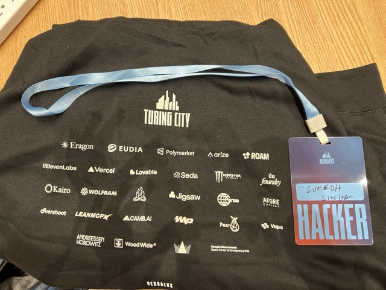
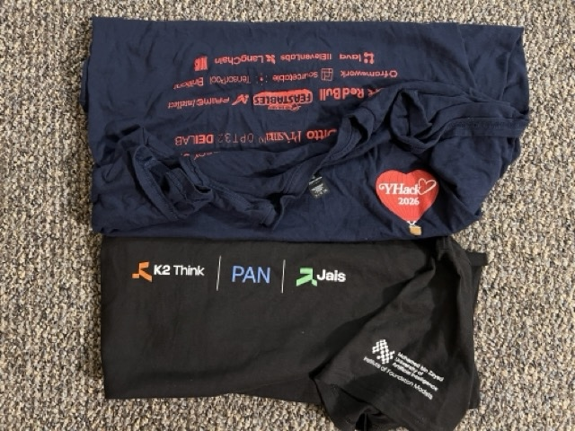
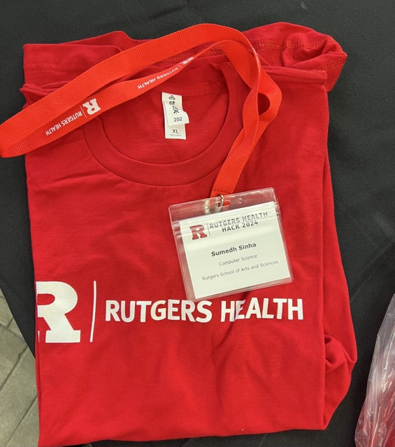
YHack 2026 Event Pictures
This is a test paragraph for the YHack 2026 event pictures section.
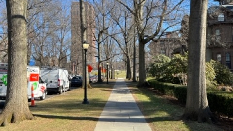
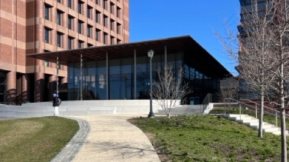
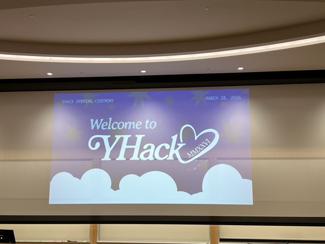
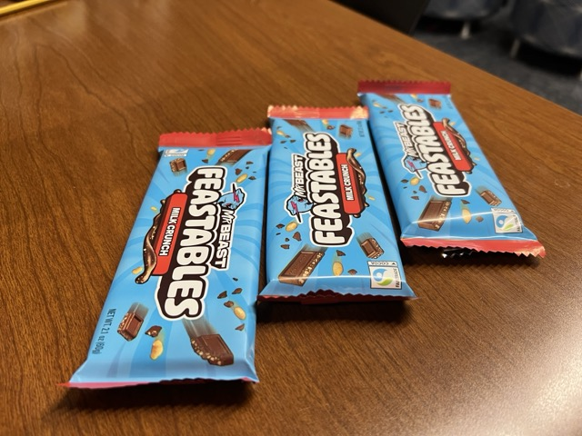
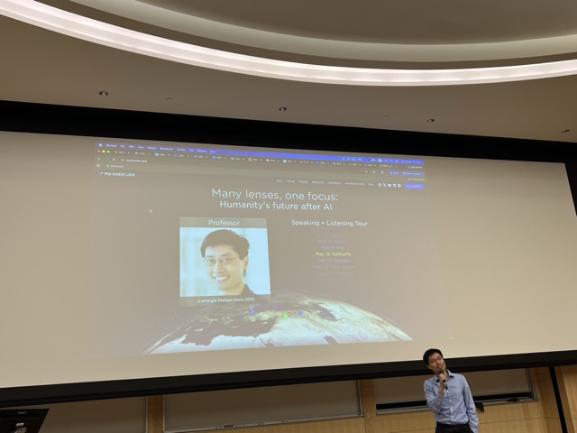
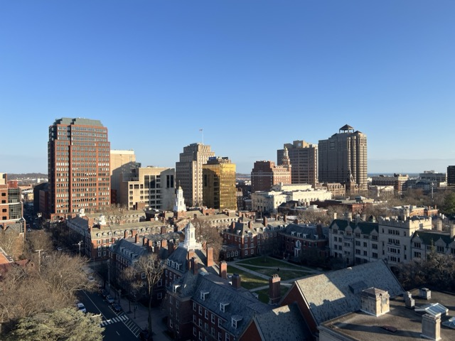
NexHacks 2026 Event Pictures
This is a test paragraph for the NexHacks 2026 event pictures section.
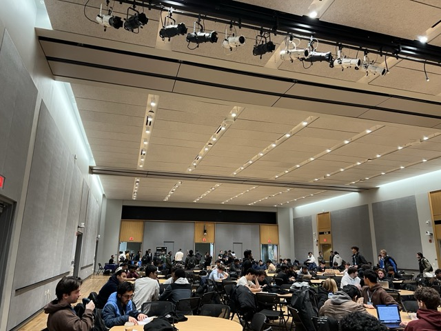
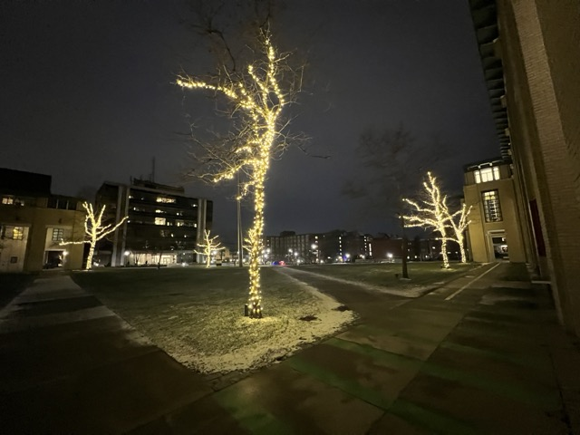
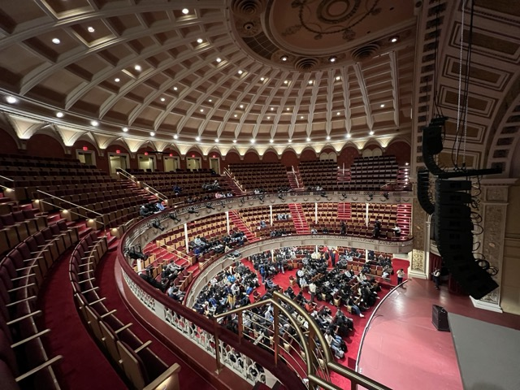
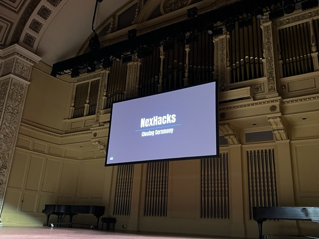
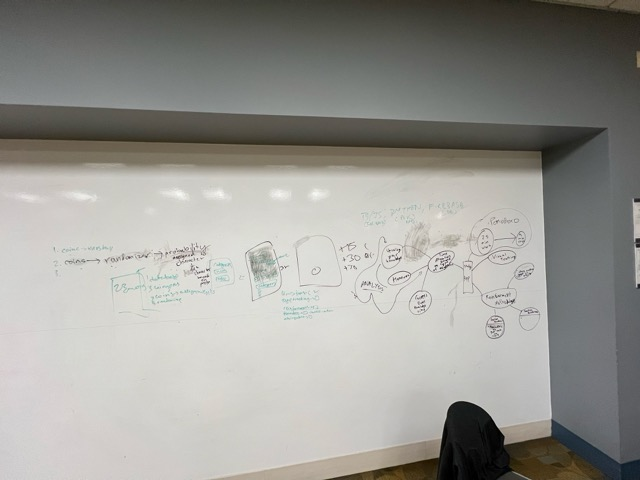
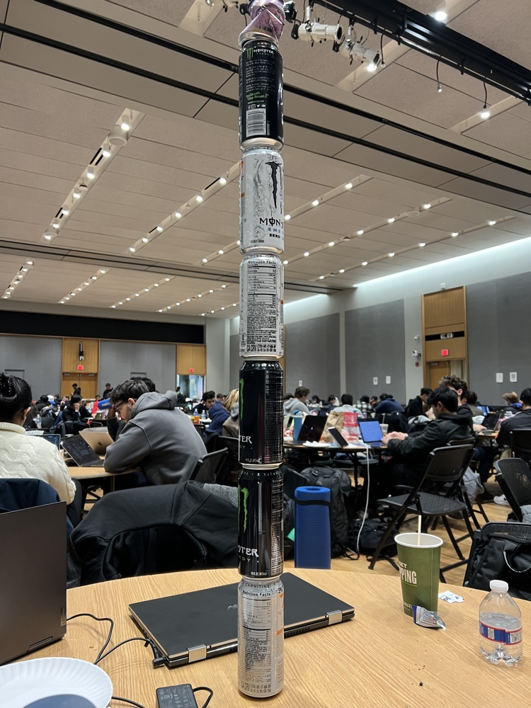
HealthHack 2024 Event Pictures
This is a test paragraph for the HealthHack 2024 event pictures section.
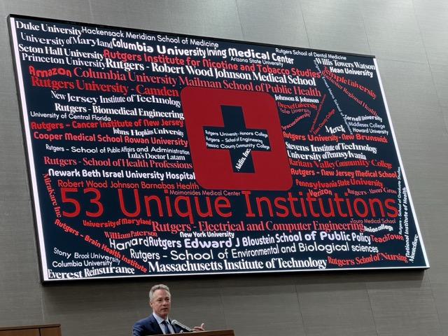
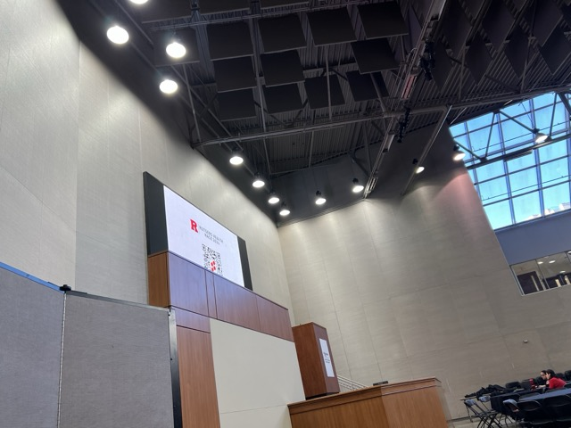
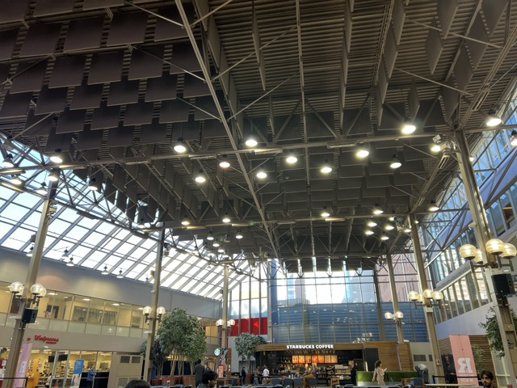
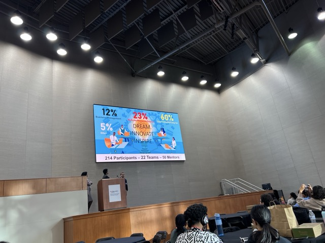
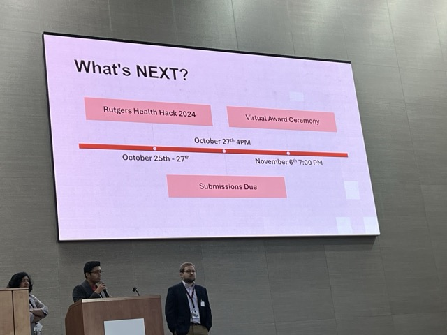
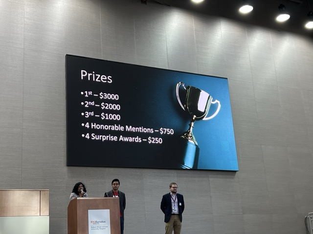
Gear Pictures
This is a test paragraph for the gear pictures section.


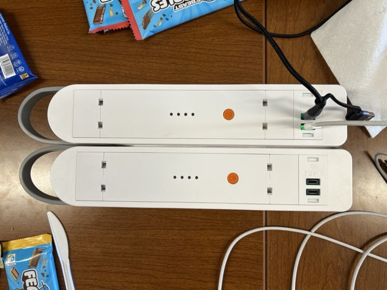
Travel Pictures
This is a test paragraph for the travel pictures section.
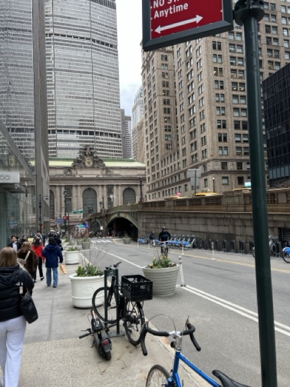
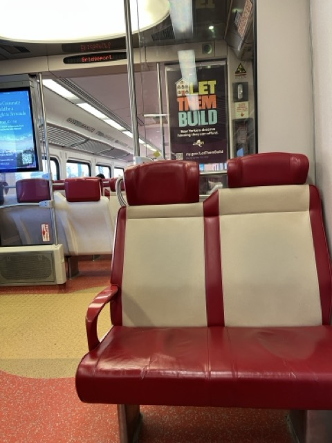
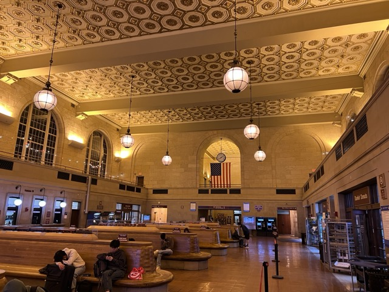
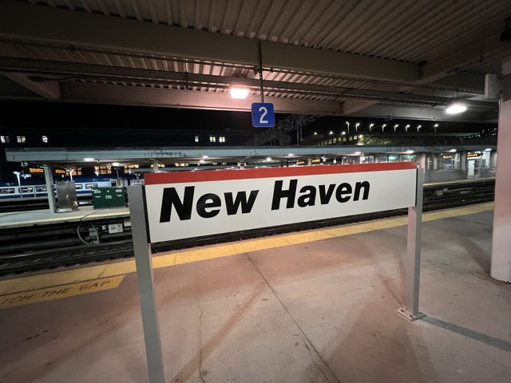
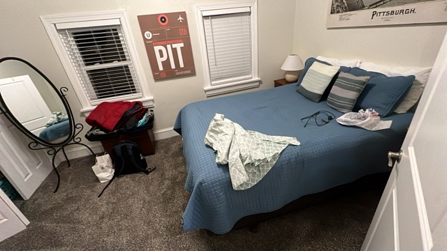